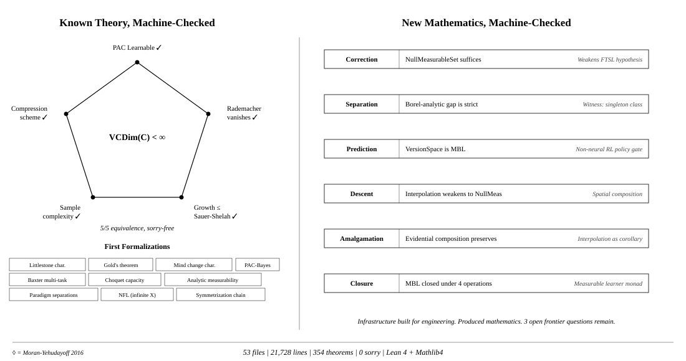
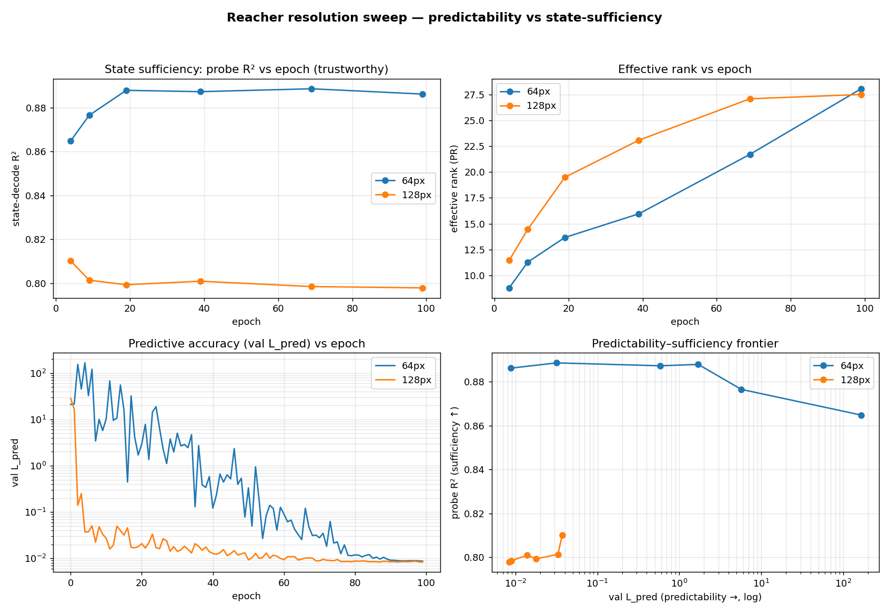
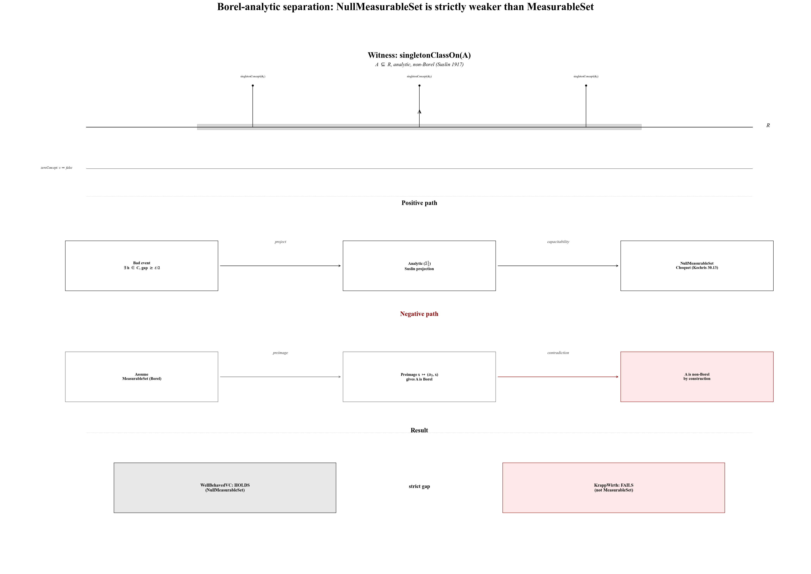
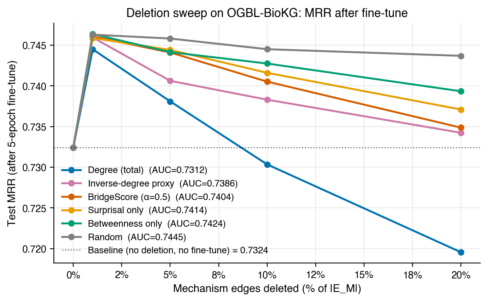
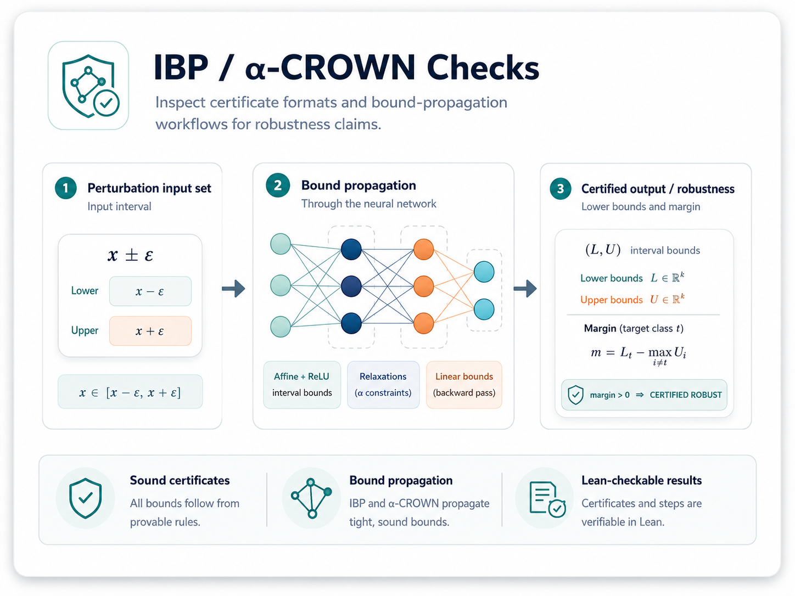
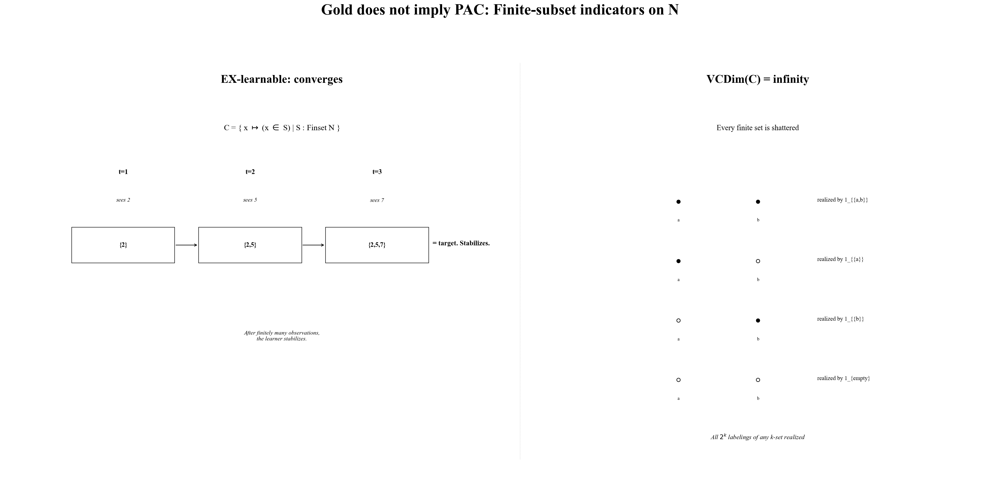
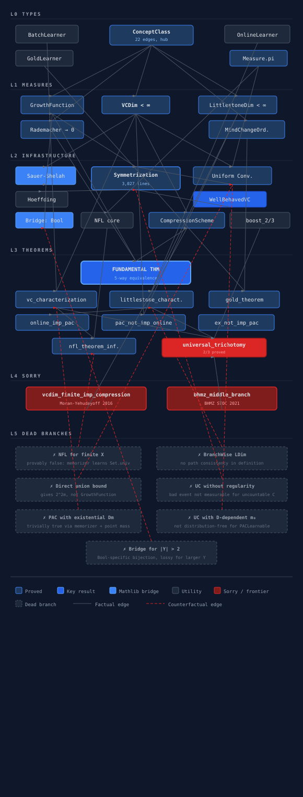
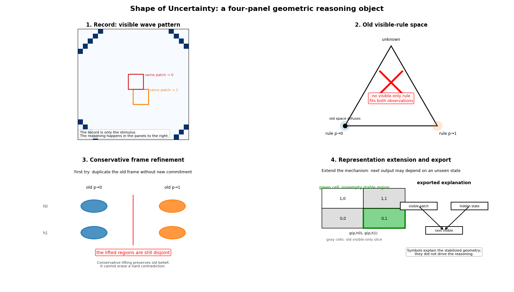

Noumenal
Building an AI scientist.
An automated researcher needs six things: a substrate to represent a world model, a way to formalize that substrate into a testable model, a measure of how much the model is believed, an agent loop that learns and intervenes, an inference engine that derives the certain and generalizes the uncertain, and a verified body of knowledge laid over a map of the open frontier.
Each ingredient rests on the one before it, and all of them rest on a structure of uncertainty.
What follows are our hypotheses about that architecture. We are verifying them one ingredient at a time, and every claim on this page carries a machine-checked proof or a figure from the work.
Projects · Substrate · Formalization · Measurement · Agents · Reasoning · Knowledge
The lineup
Nine projects, one stack.
These are the projects the page maps to ingredients below; each card links to its repository where one exists.
Rust/Go agent state store. Hash-chained (blake3), four verification layers, claim checking, multi-language SDKs.
github.com/ayushmi/agentstateMonorepo unifying six verified Lean 4 ML libraries: learning theory, measurements, transformers, statistics, RL, neural networks, causality.
github.com/noumenal-ai/design-lab140-node, 151-edge audited inheritance graph of Pearl 2009 plus ten post-2009 extensions, indexable inside Design Lab.
github.com/noumenal-ai/design-labA four-gate, two-layer audit of the discovery process: locked rubric, harness, datasets (formal learning theory, statistical learning theory, first-proof audits).
github.com/Zetetic-Dhruv/tetrad-audit-codeBelief geometry as a native epistemic state space: Cuzzolin-style readouts, frame refinement, Choquet bridge for continuous evidence.
github.com/Zetetic-Dhruv/shape-of-uncertaintySigned compression progress on a sealed audit, proved Goodhart-resistant; pure-Mathlib Lean core plus continual-learning experiments.
github.com/Zetetic-Dhruv/audit-compression-progressFormalization spec and Lean 4 development plan for a conformal world-model wrapper; four-claim package (theorem, wrapper, Atari-100k, DMControl).
PAC-Bayes bound and anytime-certificate format for self-improving agents, demonstrated on a continually self-improving language agent.
Mechanism inference via kernel/sigma-algebra duality, empirically validated against industrial datasets.
Ingredient one
1 Substrate
The representational medium an automated researcher's world-model lives in.
A hypothesis has to be made of something. We work in three media: symbolic objects in a formal language, neural function classes (notably transformers), and geometric spaces with inner products. Each medium carries a machine-checked anchor so that downstream claims stand on a definite footing.
Geometric medium: kernel mean embedding reproduces integration.
For every continuous test vector, the inner product against the mean embedding equals the integral against the measure.
This is the foundational property that lets distributions be treated as points in a Hilbert space.
Neural medium: a generalization certificate that survives floating-point execution.
An end-to-end Dudley-type bound for a transformer in IEEE binary32, with the executed numerics inside the theorem.
The bound applies to the model that actually runs, including its rounding behavior.
Neural medium: episode-frame leakage has an intrinsic floor.
The risk gap between frame-level and episode-level splits equals a conditional variance functional of the two sigma-algebras.
So a leak in the data partition cannot be papered over by adding more frames inside the same episodes.
theorem kernelMeanEmbedding_reproducing
(P : Measure X) [IsFiniteMeasure P]
(hcont : Continuous (fun x => kerFun H x (1 : ℝ)))
(f : H) :
@inner ℝ H _ (kernelMeanEmbedding (H := H) P) f = ∫ x, f x ∂P
theorem certified_executed_generalization_dudley [IsProbabilityMeasure P] {d : ℕ} [Nonempty (Fin d)]
(hm : 0 < m) {R : ℝ} (hR : 0 ≤ R) (F : ParamSpace d → V → ℝ) {b : ℝ} (hb : 0 < b)
theorem bayesRisk_gap [IsProbabilityMeasure μ]
(hm₁₂ : m₁ ≤ m₂) (hm₂ : m₂ ≤ m₀) (hX : MemLp X 2 μ) :
bayesRisk m₁ X μ - bayesRisk m₂ X μ = μ[Var[μ[X | m₂]; μ | m₁]]
theorem frame_split_inconsistent [IsProbabilityMeasure μ]
(hX : MemLp X 2 μ) (hXm : StronglyMeasurable X) :
bayesRisk (⊥ : MeasurableSpace Ω) X μ - bayesRisk m₀ X μ = variance X μ
theorem variance_grandMean_eq :
variance M.grandMean M.μ = M.σb ^ 2 / M.G + M.σw ^ 2 / (M.G * M.m)


- The symbolic medium is a Mathlib-adjacent Lean 4 development; theorems are quoted verbatim and travel with their files.
- The neural medium covers attention-routing function classes for transformers and JEPA-style predictive models for robotics data.
- The geometric medium uses RKHS structure so that distributions, independence tests, and risk functionals all live in the same inner-product space.
- Each medium ships with at least one machine-checked theorem stated against the artifact that actually runs.
Projects
Shared Mathlib-adjacent pure mathematics: the symbolic/geometric substrate staged from the formalization projects.
github.com/Zetetic-Dhruv/zetesis-puremathLean 4 measurability-theoretic foundations for transformers: attention routing universality, compositional measurability.
github.com/Zetetic-Dhruv/transformer-learning-theoryExperiments studying and correcting machine errors in automated tasks run by AI and robots.
github.com/Zetetic-Dhruv/world-model-labA library of reusable mechanized theorems and proof witnesses in Lean 4.
github.com/noumenal-ai/proof-and-theorem-libraryEstimable representations
2 Formalization
Turning substrate into a model that finite data can test.
A representation is useful only when it admits identification on the causal side and uniform convergence on the statistical side. We pin down the exact measurability, independence, and capacity conditions under which a hypothesis class becomes estimable from a finite sample, and we machine-check the bridges between them.
One theorem, five equivalences
PAC learnability, finite VC dimension, sample compression, uniform convergence, and a learning rule collapse to a single equivalence class.
Verified end to end in Lean 4 over an arbitrary measurable instance space, with the singleton-class hypothesis weakened where possible.
Independence as a kernel norm
Under a characteristic kernel, the Hilbert-Schmidt Independence Criterion vanishes exactly when the joint factorises.
Gives a finite-sample test for conditional independence usable inside identification arguments for structural causal models.
No universal proof generator
No single generator closes PAC, online, and Gold simultaneously; the three paradigms are formally distinct.
The kernel therefore carries separate tactics per regime, each tied to its own learnability characterisation.
theorem fundamental_theorem (X : Type u) [MeasurableSpace X]
[MeasurableSingletonClass X]
(C : ConceptClass X Bool)
[MeasurableConceptClass X C] :
(PACLearnable X C ↔ VCDim X C < ⊤) ∧
((VCDim X C < ⊤) ↔ ∃ (k : ℕ) (cs : CompressionSchemeWithInfo0 X Bool C), cs.size = k) ∧ ...
theorem hsicDef_zero_iff_independent
(hchar : IsCharacteristic (H := H) (X := X × Y))
(P : Measure (X × Y)) :
hsicDef (H := H) P = 0 ↔ P = (P.map Prod.fst).prod (P.map Prod.snd)
theorem analyticSet_nullMeasurableSet
{α : Type*}
[TopologicalSpace α] [MeasurableSpace α] [BorelSpace α] [PolishSpace α]
{μ : MeasureTheory.Measure α} [MeasureTheory.IsFiniteMeasure μ]
{s : Set α} (hs : MeasureTheory.AnalyticSet s) :
MeasureTheory.NullMeasurableSet s μ

theorem no_universal_generator :
¬ ∃ g ∈ fltTheory.generators,
Paradigm.pac ∈ g.paradigm ∧ Paradigm.online ∈ g.paradigm ∧ Paradigm.gold ∈ g.paradigm
- Identification on the causal side reduces to factorisation tests once HSIC is calibrated against a characteristic kernel.
- Uniform convergence on the statistical side survives weakening MeasurableSet to NullMeasurableSet, widening the admissible concept classes.
- Sample compression supplies the constructive direction of the Fundamental Theorem, with a compression size bounded by the VC dimension.
- Paradigm separation forces composition: a batch learner family is glued by a measurable monad, with the gluing operation associative under uniform measurability.
Projects
Lean 4 kernel for statistical learning theory: first complete formalization of the five-way fundamental theorem across PAC, online, Gold.
github.com/Zetetic-Dhruv/formal-learning-theory-kernelIntegrated presentation and Lean 4 modular extension package of formal learning theory.
github.com/Zetetic-Dhruv/Formal-Learning-TheoryStructured JSON dataset for formal learning theory plus a fine-tuned small model specialized in its formalization.
github.com/Zetetic-Dhruv/formal-learning-theory-datasetQuantifying the epistemic state
3 Measurement
Numbers the scientist can compute on itself: divergences, concentration, capacity, and a progress meter that does not bend under pressure.
A scientist that cannot measure its own state cannot improve. We give the agent a small, formal toolkit: a divergence bound that relates total variation to information loss, a concentration inequality for sample-mean estimators, a capacity equivalence that decides when a hypothesis class is learnable at all, a bounded embedding for comparing distributions in a reproducing-kernel space, and a telescoping audit signal whose accumulated value is exactly the endpoint difference.
Pinsker with sharp constant
Total variation between two probability measures is bounded by a square-root function of their KL divergence, with the constant of one half.
This is the basic conversion rate between information loss and decision error. The agent uses it to turn likelihood gaps into bounds on test power.
Efron-Stein variance bound
The variance of any square-integrable function of independent inputs is bounded by a sum of conditional-deviation terms, one per coordinate.
A general device for controlling sample-mean fluctuations of arbitrary estimators without assuming product structure beyond independence.
Audit progress telescopes
Cumulative compression progress along any audit trajectory equals the endpoint difference of the underlying scalar functional.
A path-independent progress meter. No relabelling, splitting, or padding of intermediate steps changes the total. The signal is by construction unresponsive to local manipulation.
theorem pinsker_proof
(P Q : Measure α) [IsProbabilityMeasure P] [IsProbabilityMeasure Q]
(hac : P.AbsolutelyContinuous Q) (h_int : Integrable (llr P Q) P) :
tvDistReal P Q ≤ Real.sqrt (klDivReal P Q / 2)
theorem efronStein (f : (Fin n → Ω) → ℝ) (hf : MemLp f 2 μˢ) :
variance f μˢ ≤ ∑ i : Fin n, ∫ x, (f x - condExpExceptCoord (μs := μs) i f x)^2 ∂μˢ :=
theorem cumCP_telescope {ι : Type*} (E : ι → ℝ) (g : ℕ → ι) (T : ℕ) :
cumCP E g T = E (g 0) - E (g T)
theorem fundamental_vc_compression_with_info
(X : Type u) (C : ConceptClass X Bool) :
(VCDim X C < ⊤) ↔
(∃ (k : ℕ) (cs : CompressionSchemeWithInfo0 X Bool C), cs.size = k) :=
theorem kernelMeanEmbedding_norm_le
(P : Measure X) [IsProbabilityMeasure P] :
‖kernelMeanEmbedding (H := H) P‖ ≤ BoundedKernel.bound (H := H) (X := X)

Projects
Out-of-distribution geometry via factored knowledge-graph embeddings; Lean-verified learning theory for state-mechanism decomposition.
github.com/Zetetic-Dhruv/icm-unbundling282 schema-valid per-goal audit records across five substrates with human-graded gold-standard exemplars.
github.com/Zetetic-Dhruv/tetrad-audit-dataset- Divergence layer: Pinsker converts a KL bound into a total-variation bound, so a likelihood test inherits a quantitative power guarantee.
- Concentration layer: Efron-Stein controls the variance of any L2 estimator built from independent samples, with no model-specific assumptions.
- Capacity layer: the VC-compression equivalence settles when a class is learnable at all, and pins sample complexity to a combinatorial constant.
- Progress layer: the telescoping identity yields an additive scalar whose endpoint value is the only thing that can move it.
Ingredient four
4 Agents
The scientist closes the loop: learn the world, imagine the consequence, act under risk.
An automated researcher is an agent. It estimates dynamics from samples, rolls out hypothetical interventions in a learned model, and chooses experiments whose expected payoff justifies their cost. Convergence guarantees, audit budgets, and coherent risk measures are the load-bearing pieces.
Learning converges almost surely
Q-learning iterates converge to the optimal action-value function under Markovian sampling and inverse-polynomial step sizes.
The classical Watkins guarantee is now machine-checked at the sample-path level, with almost-sure convergence on Markov sequences.
Linear value-function approximation is on the same footing
Linear TD with Markovian samples converges almost surely to the TD fixed point.
The two convergence results share a stochastic-approximation core, formalized as a reusable theorem family.
Disciplined action lowers coherent risk
Under any coherent risk measure, switching from an unsupervised to a disciplined factor decreases the risk charge, cell by cell.
This makes oversight a quantitative ingredient in the decision calculus, with a uniform cell-wise inequality.
theorem ae_tendsto_of_QLearning_markov
{ν : ℝ} (hν : ν ∈ Set.Ioo (2 / 3) 1)
(hq : QLearningIterates (spec := spec) (q := q))
(hα : spec.α = fun n : ℕ => inv_poly ν 2 n) :
∀ᵐ ω ∂ spec.MRP.markov_samples,
Tendsto (fun n => q n ω) atTop (𝓝 spec.optimal_q)
theorem ae_tendsto_of_linearTD_markov
{ν : ℝ} (hν : ν ∈ Set.Ioo (2 / 3) 1)
(hw : LinearTDIterates (spec := spec) (w := w))
(hα : spec.α = fun n : ℕ => inv_poly ν 2 n) :
∀ᵐ ω ∂ spec.markov_samples,
Tendsto (fun n => w n ω) atTop (𝓝 spec.td_fixed_point)
theorem coherentRiskMeasure_lowers_under_disciplined_DE
(rho : CoherentRiskMeasure Cell)
(loss : Cell → ℚ → ℚ)
(factorDisc factorAd : Cell → ℚ)
(hfactor_le : ∀ c, factorDisc c ≤ factorAd c)
(hloss_mono : ∀ c f₁ f₂, f₁ ≤ f₂ → loss c f₁ ≤ loss c f₂) :
rho.charge (fun c => loss c (factorDisc c))
≤ rho.charge (fun c => loss c (factorAd c))
theorem finite_audit_goodhart {ι : Type*} {F : Set ι} {Ehat E : ι → ℝ} {Δ : ℝ}
(hUD : UniformDev F Ehat E Δ) {g : ℕ → ι} (hg : Admissible g F) (T : ℕ) :
cumCP Ehat g T ≤ cumCP E g T + 2 * Δ


- Convergence is proved at the sample-path level, on Markovian sample sequences, with no i.i.d. assumption.
- The coherent-risk theorem is paradigm-neutral: it holds for any coherent measure on the cell space, including conditional value-at-risk.
- The horizon-free audit bound separates panel quality from run length, so a sealed audit panel can score arbitrarily long self-improvement runs.
- Bound-propagation certificates compose with the convergence and risk results to give an end-to-end action-time guarantee.
Projects
A typed argmax-routing autodidact: gated knowledge commits over an append-only version DAG on the verified Lean 4 substrate.
Agent runtime for the discovery loop.
Deductive and inductive inference
5 Reasoning
What a machine-checked proof settles, and where inductive generalization runs out.
Reasoning has two faces. The deductive face is a Lean kernel that signs off on a theorem statement and a proof term. The inductive face is the boundary at which generalization from finite data is well-defined at all: PAC, online, and learning-in-the-limit are distinct paradigms, each with its own dimension and its own impossibility line.
Identification in the limit has a hard wall
Any concept class that contains every finite subset and at least one infinite concept is not EX-learnable.
Gold's 1967 impossibility, machine-checked end to end. The kernel forecloses learning-in-the-limit for the natural superfinite family.
PAC and online are different paradigms
There exists a measurable concept class that is PAC learnable yet not online learnable.
A constructive witness with finite VC dimension and infinite Littlestone dimension, exhibiting the gap explicitly.
Analytic measurability is the correct hypothesis
An analytic non-Borel set yields a singleton class on which the well-behaved VC target holds while the Krapp-Wirth separation fails.
The classical Borel measurability hypothesis for uniform convergence is too strong. The kernel pins the strict gap on a concrete witness.
theorem gold_theorem (X : Type u) [Countable X] [DecidableEq X]
(C : ConceptClass X Bool)
(h_finite : ∀ (S : Finset X), (fun x => decide (x ∈ S)) ∈ C)
(h_infinite : ∃ c ∈ C, Set.Infinite { x | c x = true }) :
¬ EXLearnable X C
theorem pac_not_implies_online :
∃ (X : Type) (_ : MeasurableSpace X) (C : ConceptClass X Bool),
PACLearnable X C ∧ ¬ OnlineLearnable X Bool C
theorem ex_not_implies_pac :
∃ (X : Type) (C : ConceptClass X Bool),
EXLearnable X C ∧ ... ¬ PACLearnable X C
theorem analytic_nonborel_set_gives_measTarget_separation
(A : Set ℝ) (hA : AnalyticSet A) (hA_non : ¬ MeasurableSet A) :
WellBehavedVCMeasTarget (singletonClassOn A) ∧
KrappWirthSeparationMeasTarget (singletonClassOn A) = False
theorem MeasureTheory.measure_isChoquetCapacity
{α : Type*}
[TopologicalSpace α] [MeasurableSpace α] [BorelSpace α] [PolishSpace α]
(μ : MeasureTheory.Measure α) [MeasureTheory.IsFiniteMeasure μ] :
MeasureTheory.IsChoquetCapacity (fun s : Set α => μ s)


- Three paradigms, three dimensions: PAC tracks VC dimension, online tracks Littlestone dimension, EX tracks mind-change ordinals. Pairwise non-implications are signed by the kernel.
- Impossibility is a hard conclusion.
gold_theoremrules out a learner on a precisely typed family; no algorithmic improvement closes the gap. - Descriptive set theory enters at the measurability boundary. Analytic sets are the right level of generality for the uniform-convergence hypothesis.
- The discovery DAG records the actual route through proof space, including rejected branches. Reasoning leaves an audit trail.
Projects
The Lean Computer Science Library: semantics, calculi, and the deductive-reasoning substrate.
github.com/Zetetic-Dhruv/cslibSynthetic math discovery analysis: 74 reasoning traces, metakernel data, 10,000+ exploration paths.
github.com/Zetetic-Dhruv/formal-learning-theory-discoverySix: knowledge
6 Knowledge & the structure of uncertainty
What the scientist comes to know, and the map of where that knowledge stops.
Knowledge in this programme is a body of verified results laid over a frontier map that says which classes admit learning at all, with what posterior guarantee, and after how many mind changes. The witnesses below give the standard characterizations: VC dimension for batch learning, Littlestone dimension for online learning, finite ordinals for learning in the limit, and a McAllester-style posterior bound.
Learnability has a finite-dimensional certificate.
PAC learnability of a concept class is equivalent to finite VC dimension.
The result fixes which hypothesis classes can be learned from i.i.d. samples at all. Below the threshold the class is learnable with sample complexity polynomial in the VC dimension; above it, no learner succeeds uniformly.
Learning in the limit has an ordinal boundary.
A concept class is EX-learnable iff some learner makes fewer than ω mind changes on every text.
The mind-change count, measured as an ordinal below ω, sharply distinguishes the EX-learnable classes from the unlearnable ones. Finite ordinals separate paradigms that look identical at the level of asymptotic correctness.
A posterior-aware bound holds at finite sample size.
For any prior P and finite m, every posterior Q over hypotheses satisfies a McAllester PAC-Bayes bound with confidence 1−δ.
The Gibbs generalization error is controlled by the empirical Gibbs error plus a complexity term in the cross-entropy of Q against P, divided by 2m. This is the posterior bound, machine-checked.
theorem vc_characterization (X : Type u) [MeasurableSpace X]
[MeasurableSingletonClass X]
(C : ConceptClass X Bool)
[MeasurableConceptClass X C] :
PACLearnable X C ↔ VCDim X C < ⊤ :=
theorem littlestone_characterization (X : Type) (C : ConceptClass X Bool) :
OnlineLearnable X Bool C ↔ LittlestoneDim X C < ⊤ :=
theorem optimal_mistake_bound_eq_ldim (X : Type)
(C : ConceptClass X Bool) (hne : C.Nonempty) :
(↑(OptimalMistakeBound X C) : WithBot (WithTop ℕ)) = LittlestoneDim X C :=
theorem mind_change_characterization (X : Type u)
(C : ConceptClass X Bool) :
EXLearnable X C ↔
∃ (L : GoldLearner X Bool),
∀ (c : Concept X Bool), c ∈ C →
∀ (T : TextPresentation X c),
MindChangeOrdinal X L c T.toDataStream < Ordinal.omega0 :=
theorem pac_bayes_finite {X : Type u} [MeasurableSpace X]
{H : Type*} [Fintype H] [Nonempty H]
(D : MeasureTheory.Measure X) [MeasureTheory.IsProbabilityMeasure D]
(c : Concept X Bool) (hc_meas : Measurable c)
(hs : H → Concept X Bool) (hhs_meas : ∀ h, Measurable (hs h))
(P : FinitePMF H) (hP_pos : ∀ h, 0 < P.prob h)
(m : ℕ) (hm : 0 < m) (δ : ℝ) (hδ : 0 < δ) (hδ1 : δ ≤ 1) :
MeasureTheory.Measure.pi (fun _ : Fin m => D)
{ S : Fin m → X |
∀ (Q : FinitePMF H),
gibbsError Q hs c D ≤
gibbsEmpError Q hs c S +
Real.sqrt ((crossEntropyFinitePMF Q P + Real.log (1 / δ)) / (2 * ↑m)) }
≥ ENNReal.ofReal (1 - δ) :=
The frontier
Verified knowledge is laid over a four-region map. The same map is what the scientist uses to decide what to attack next.
VC-PAC equivalence, Littlestone-online equivalence, mistake-bound equality, mind-change ordinal boundary, McAllester PAC-Bayes bound. All machine-checked.
Tight posterior bounds for infinite hypothesis spaces with measurable priors; characterization of agnostic online learnability beyond Littlestone; sample-complexity gaps in the PAC-Bayes regime.
Empirical generalization of overparametrized models below the bound; benign overfitting; regularities in transformer learning curves outside the VC regime.
Learnability under non-stationary distributions without a stability assumption; computability-theoretic boundaries of learning by reflective agents; epistemic guarantees over open-ended action spaces.
- The three paradigms are characterized by three different complexity measures: VC dimension, Littlestone dimension, and mind-change ordinal. Each measure is tight.
- PAC-Bayes provides a posterior-sensitive guarantee at finite sample size, with explicit confidence 1−δ over the draw of S.
- The frontier map assigns every project on the page to one of the four regions and routes new work accordingly.

Projects
Empirical analysis of synthetic discovery of non-trivial mathematical proofs using frontier models.
github.com/Zetetic-Dhruv/First-Proof-Benchmark-ResultsEmpirical reserve of 43 datasets with natural out-of-distribution shift, structured for mechanism-discovery benchmarking.
github.com/Zetetic-Dhruv/traces-corpusA 202-page textbook of formal learning theory with a 142-node concept graph.
github.com/Zetetic-Dhruv/formal-learning-theory-bookMethod and falsification
7 How we work, and what would break it
Every claim on this page carries a witness from the corpus: a Lean theorem the kernel checks, or a figure from a run that produced it. Nothing here rests on prose alone.
A scientist that improves itself can only be trusted if its measured progress tracks its real progress. We state that as a theorem and we name the conditions that void it.
Measured improvement is trustworthy exactly when the audit gap stays bounded; when it cannot be bounded, the guarantee is vacuous and the program fails.
- Each result is either machine-checked in Lean 4 against Mathlib, or backed by a figure from the run that produced it. The source file or theorem name is printed beside every claim.
- Self-improvement is scored on a sealed audit distribution. Progress on that audit telescopes to an endpoint identity, so an agent cannot farm reward by cycling between states it forgets and relearns.
- The link from audit score to real score holds only under a uniform deviation bound across the admissible hypotheses. That bound is the load-bearing hypothesis, stated explicitly below.
- Falsifier: if the audit panel is reusable and the hypothesis class has enough capacity to memorize it, the deviation cannot be bounded, the budget term diverges, and verified progress stops certifying anything. We have measured this gap growing on a small MLP.
theorem finite_audit_goodhart {ι : Type*} {F : Set ι} {Ehat E : ι → ℝ} {Δ : ℝ}
(hUD : UniformDev F Ehat E Δ) {g : ℕ → ι} (hg : Admissible g F) (T : ℕ) :
cumCP Ehat g T ≤ cumCP E g T + 2 * Δ
verifiable_RSI/audit-compression-progress/AuditCP/AuditCP/FiniteAudit.lean : finite_audit_goodhart